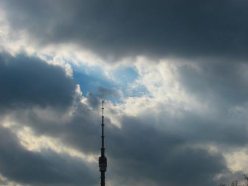
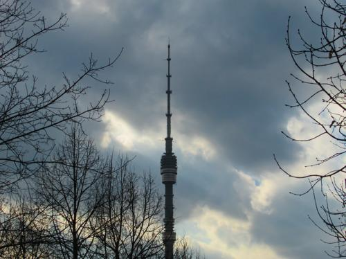
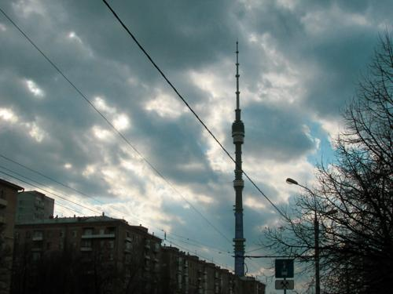

- 写真第13枚" title="HOMESTANKINO：2019 -> 写真第13枚（クリックして完全版を見る）">
- 写真第14枚" title="HOMESTANKINO：2019 -> 写真第14枚（クリックして完全版を見る）">


- 写真第26枚" title="HOMESTANKINO：2019 -> 写真第26枚（クリックして完全版を見る）">


- 写真第30枚" title="HOMESTANKINO：2019 -> 写真第30枚（クリックして完全版を見る）">

-  写真第32枚" title="HOMESTANKINO：2019 -> 写真第32枚（クリックして完全版を見る）">


-  写真第35枚" title="HOMESTANKINO：2019 -> 写真第35枚（クリックして完全版を見る）">
-  写真第36枚" title="HOMESTANKINO：2019 -> 写真第36枚（クリックして完全版を見る）">